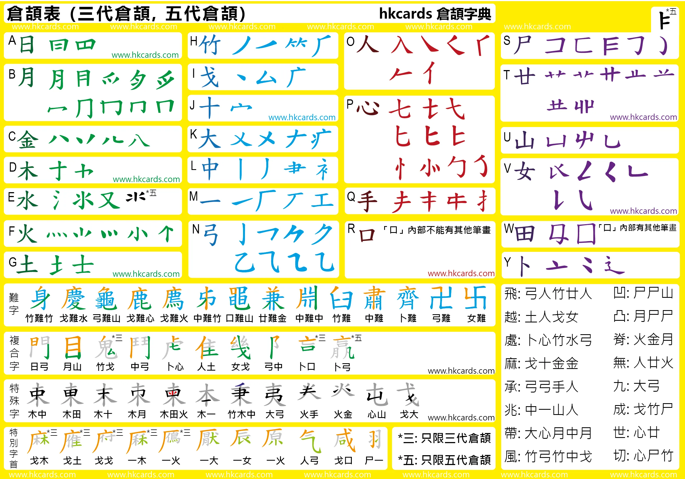

输入法: 仓颉
安装输入法
- MacOS自带
- Windows
- 可以安装 RIME 切换到仓颉或者安装《倉頡平台 2022》繁简切换
- 安桌版
- 可以用 "yong输入法" 的手机版，可以兼容倉頡平台2022的码表（倉頡平台2022就是基于yong输入法做的）
- 搜狗输入法，增加语言仓頡。
RIME
下载软件 RIME。安装完后，切换到 Rime 输入法，按 Ctrl+` 或 F4 切换输入方案。择选 '倉頡五代'。
東風破 plum 配置管理工具安裝多种輸入方案。如安装五笔86版。
- Windows 用家可以通過 小狼毫 0.11 以上「輸入法設定／獲取更多輸入方案」調用配置管理器，输入wubi并回车自动安装五笔。
选字与换页
- 使用 ↑↓键定位高亮的候选字，以空格键确认。
输入法教程

- 倉頡之友: 第五代倉頡輸入法手冊
- 倉頡之友．香港: 第五代仓颉输入法
- 知乎: 如何学习和使用仓颉输入法？
- 查字: hkcards 倉頡字典
口诀【日月金木水火土，竹戈十大中一弓，人心手口，尸廿山女田卜】。还有X键【難】，Z保留键无用。
口诀对应的是英文键盘下的ABCDEFG，HIJKLMN，OPQR，STUVWY，加上X键，就保留了Z（重）没字根，按一下可以选择标点符号。